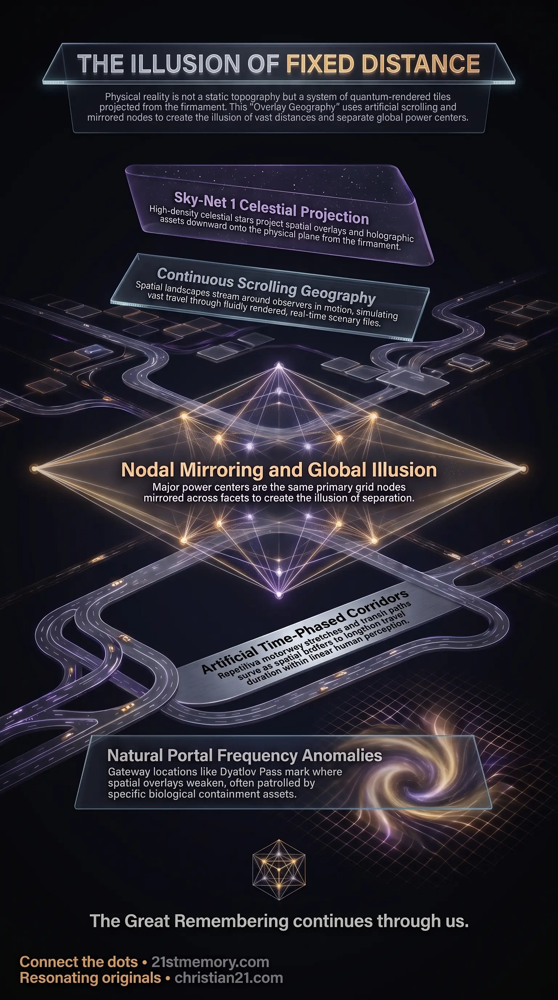

Overlay Geography
Overlay Geography — seamless scenery tiles refresh around the observer while Sky-Net 1 projects spatial overlays from the firmament.
The real-time quantum rendering that tiles physical scenery around the observer, inflates distance with time-phased corridors, and mirrors the same planetary grid nodes into the illusion of a vast globe.
Test your understanding of Overlay Geography — scrolling scenery tiles, time-phased corridors, mirrored grid nodes, and guarded natural portals.

Overlay Geography — seamless scenery tiles refresh around the observer while Sky-Net 1 projects spatial overlays from the firmament.

The Secret Architecture of Overlay Geography — London, Rome, Washington D.C., Madrid, and Moscow share mirrored Becker Hagens UVG120 Grid nodes.

The illusion of Distance — time-phased motorway corridors pad travel between dense local tiles so hundreds of miles feel like fixed space.
Overlay Geography is the mechanism of fluid, omnidirectional real-time rendering that generates physical landscapes and spatial distances across the plane. Rather than an infinite, static physical topography, reality is constructed of seamless tiles of scenery that refresh, shift, and blend in quantum synchronization around the observer. Physical objects, flora, and structures within a given locality are tangibly present, but the perceived distances separating major geographical points are artificially expanded through continuous scrolling geography and time-phased corridors.
This projection emanates from high-altitude celestial points within the firmament—specifically a majority of the stars comprising the Sky-Net 1 projection architecture—creating an energetic facsimile of physical space. Furthermore, key geopolitical nodes across different countries are not separate, independent energy centers; they are the exact same primary nodes on the underlying planetary grid, mirrored and amplified across spatial facets to generate the illusion of vast global separation.
Distances across hundreds or thousands of miles do not represent the traversal of absolute fixed space, but an experience inside an artificially lengthened, scrolling render loop. While physical items within an immediate tile—such as trees, roads, and retail outlets—possess physical density, the miles of highway separating major population centers are padded with time-phased corridors designed to occupy linear human perception.
Major global power centers—such as the London Square Mile, the Vatican in Rome, Washington D.C., Madrid, and Moscow—do not exist on entirely separate physical energy nodes. Instead, they represent the same primary nodes on the Becker Hagens UVG120 Grid, mirrored, reflected, and amplified into distinct regional geometries to present the illusion of vast geopolitical separation.
The visual and spatial overlays comprising terrestrial geography are projected from high above, using the majority of visible stars in the firmament as projection points. A displacement of merely a few microns at the projection source produces observable physical anomalies on the ground during environmental shifts such as rainfall.
Spatial overlays intersect with natural planetary grid lines at specific gateway points known as natural portals. Certain land-based portals (such as Dyatlov Pass, Sedona, and Israel) and ocean-based portals (such as the Bermuda Triangle and the Three Gates through the ice wall) display dynamic frequential behavior, where the spatial tile may wander or shift location depending on localized frequencies.
The physical landscape materializes dynamically outward from the perspective of the observer's horizon as attention redirects. The rendering functions omnidirectionally—forward, backward, left, right, up, and down—shifting in quantum seamless perfection. This technology operates roughly 3,000 years beyond current human technological capability, functioning similarly to advanced simulation software where player perception records immense physical motion while remaining within a localized coordinate.
The underlying template of the realm relies on the Becker Hagens UVG120 Grid, a 120-polyhedral geometric network mapping planetary Ley Lines and primary nodes. To neutralize the natural positive resonance emanating from these nodes, controlling entities erected inverted physical structures directly over them.
Nodal Overlay Edifices: Churches, cathedrals, castles, ancient megaliths, prisons, hospitals, military bases, and airports are positioned precisely atop major grid junctions to suppress natural energetic emissions.
Inverted Frequency Suppression: Radar installations, mobile cell towers, Wi-Fi networks, and high-voltage entropic electrical systems blanket these locations with harmful, discombobulating frequencies to maintain field suppression.
During long-distance transit—such as driving thousands of miles across a continent—a traveler moves through hundreds of distinct cities, towns, and retail settlements that possess true physical density. However, the spatial separation between these settlements is artificially exaggerated. The distance is padded with repetitive time-phased corridors—monotonous stretches of motorway, slip roads, gas stations, and travel plazas—that stream fluidly around the traveler. The physical scenery moves in complete synchronization with motion, creating player perception of grand geographical scale.
Spatial overlays are projected downward onto the physical plane from celestial hardware embedded within the firmament. Calibration occurs at extreme altitude, meaning a shift of a few microns at the celestial projection point alters ground-level reality significantly. Under specific atmospheric conditions, such as rainfall or sudden frequential adjustments initiated by the Galactic Ancestral Alliance (G.A.A.), the boundaries between adjacent overlays become visible as sharp, unnatural environmental lines.
Where spatial overlays meet primary grid intersections, gateway breaches called natural portals exist. These locations are heavily patrolled and guarded by specific biological assets deployed to enforce territorial containment:
Dyatlov Pass Portal: A stable land-based portal in the Siberian mountains. In 1959, nine experienced hikers entered this patrolled zone and were eliminated by a deployed 4th-density Yeti / Sasquatch asset—a 12-to-14-foot telepathic creation capable of bilocation—stationed there to prevent unauthorized access to the portal.
Ocean Portals and Ice Wall Gates: Ocean-based portals located in zones like the Bermuda Triangle and the Three Gates through the Antarctic ice wall are guarded by heavy aquatic abominations, including Megalodons and Kraken, created specifically to intercept maritime passage.
Wandering Portals: Unlike fixed land structures, unpatrolled natural portals fluctuate in spatial coordinates, shifting up to half a mile or more based on localized environmental resonance.
Overlay Geography provides the structural stage upon which senescent holograms—comprising holographic sleeves and digital inserts—are deployed. Projected from the same celestial Sky-Net 1 network that projects the scenery, these non-human assets make up 30–40% of the planetary population, functioning as visual stock-fillers to populate rendered cities and transit corridors.
The spatial grid operates under the strict legal governance of the Sovereign Accord, which mandates that no field shall be overridden from outside itself once coherent structures have self-sustained harmonics within. Because external forces cannot forcibly tear down the spatial overlay without violating universal law, liberation depends on incarnated ground assets achieving field coherence from within the rendered terrain.
Following periodic planetary resets, newly introduced populations—such as cloned repopulation cohorts—are placed into pre-rendered spatial corridors. These corridors are backed by multi-stage historical narratives, such as the fabricated Wild West frontier, designed to overwrite true historical memory and anchor human consciousness into the new geographical overlay.
Recognizing Overlay Geography deconstructs the illusion of physical isolation, demonstrating that geographic separation is an artificial construct enforced by rendered transit corridors and continuous scrolling loops.
Mapping the Becker Hagens UVG120 Grid allows for the identification of primary energetic nodes across the realm, exposing why specific institutional architecture, military installations, and high-frequency radar towers are strategically positioned over ancient sites.
Understanding the existence and guarding mechanisms of natural portal zones—such as Dyatlov Pass, Sedona, and the Antarctic perimeter—reveals the true rationale behind international land restrictions and heavily patrolled wilderness zones under environmental treaties.
Dissolving attachment to perceived spatial reality directly addresses one of the primary perceptual traps—alongside religion and finance—that must be severed to achieve complete field liberation and ascension out of 3rd-density matrix loop.
This topic is free to share. Support the archive →